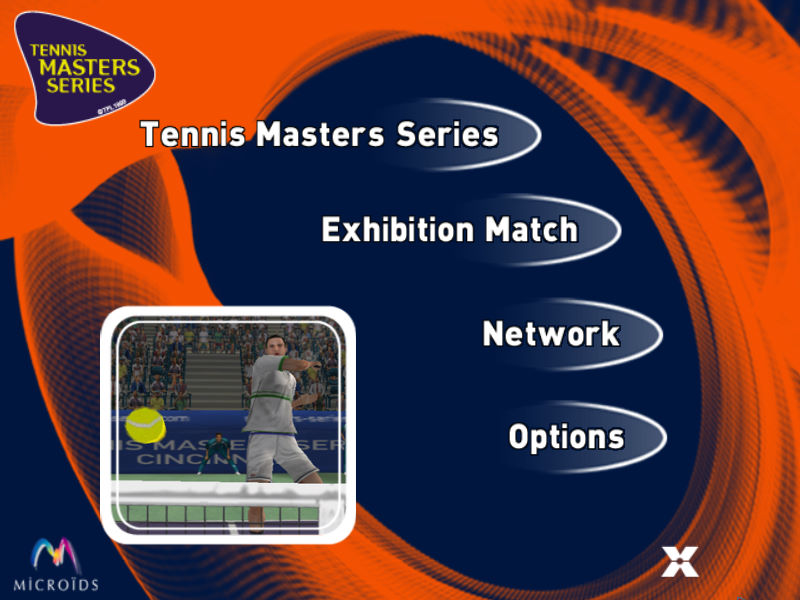
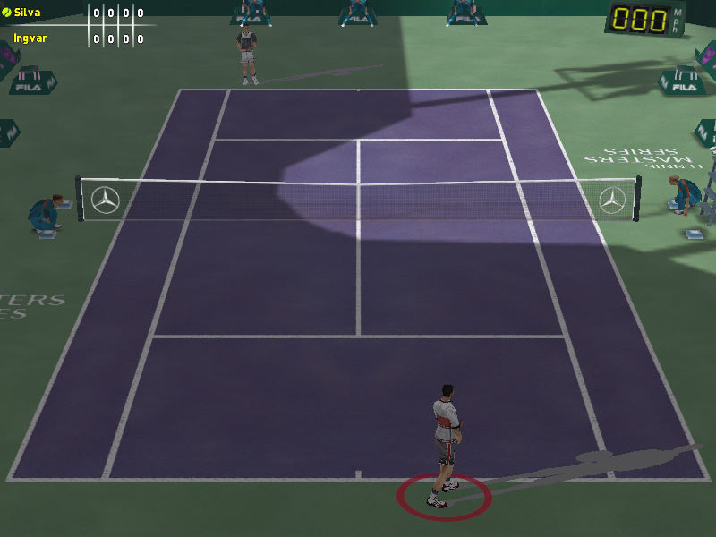

名稱：網球大師系列 (Tennis Masters Series，英文版) 簡介：Microids 2001年出品的網球遊戲 [待補]。

保護：光碟 備註：VirtualBox無法正常執行，虛擬機請使用VMware。 備註：非安裝移機者，需設定下列Registry，否則顯示的語系不會是英文： [HKEY_LOCAL_MACHINE\SOFTWARE\Microids\Tennis Masters Series] [HKEY_LOCAL_MACHINE\SOFTWARE\WOW6432Node\Microids\Tennis Masters Series] "Language"="Scripts/english.txt"